A no-code scientific computing environment for solving forward and inverse problems with physics-informed neural networks — from setting up the equations to training, error analysis, and visualization.
curl -LsSf https://raw.githubusercontent.com/AsfandyarKhan72/PINNStudio/main/get-pinnstudio.sh | sh
macOS and Linux. On Windows, use the PowerShell command.
Setting up a physics-informed neural network by hand means writing a new script for every problem: the residual of the equations through automatic differentiation, the sampling of collocation points, the weighting of the loss terms, the optimizer schedule, and then the plotting and error analysis afterwards. PINNStudio puts all of it into one place — so researchers and students in science and engineering, including those new to scientific computing or machine learning, can solve their own problems with PINNs.
Type the equations as you would write them — du_t + u*du_x - 0.01/pi*du_xx — and set the domain, conditions, network and training in one panel.
Training with live progress, error against reference data, plots and animations, parameter sweeps, and a saved model you can reload without retraining.
Every problem becomes a standalone Python script you can read, share or run on a cluster, and runs use a fixed random seed so results can be repeated.
A model tree on the left, the settings of the selected part in the middle, graphics on the right and the training log below — the layout of finite-element tools such as COMSOL. Every panel can be resized, and three themes are built in.
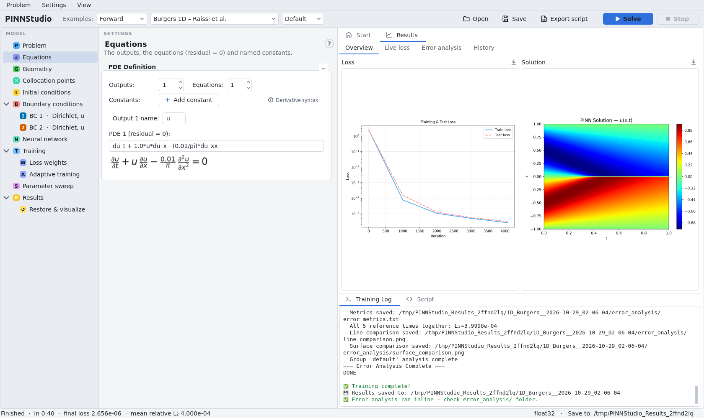
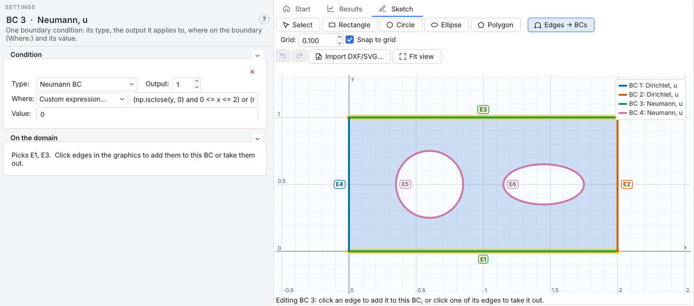
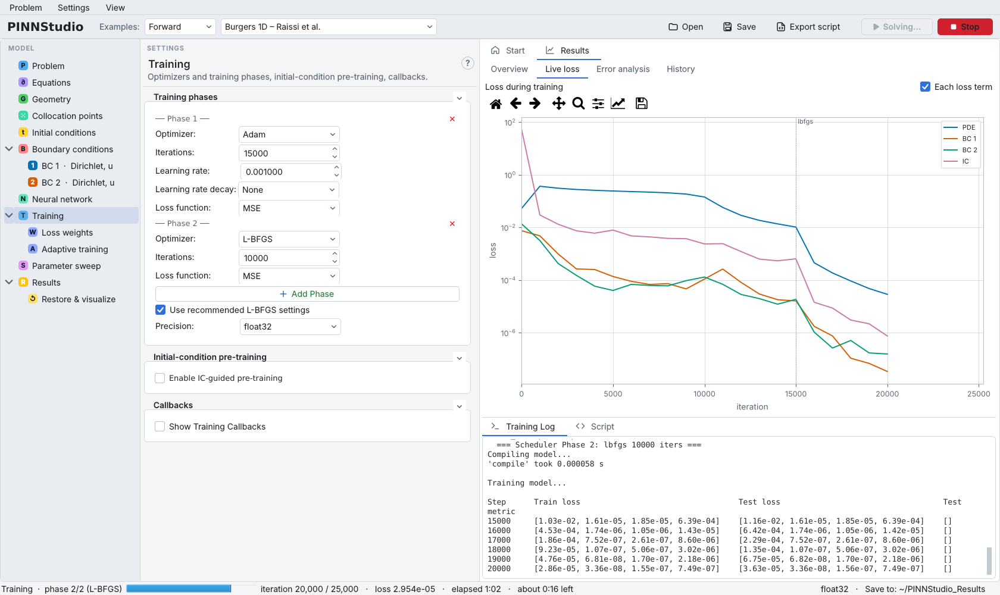
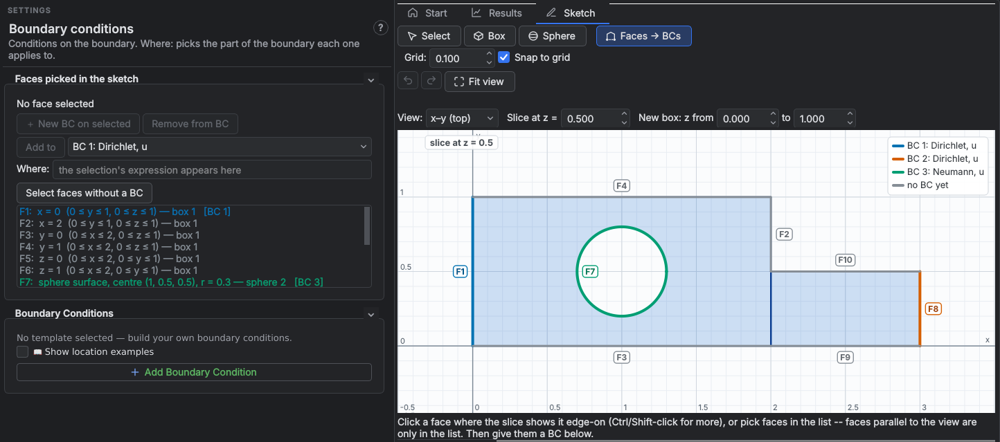
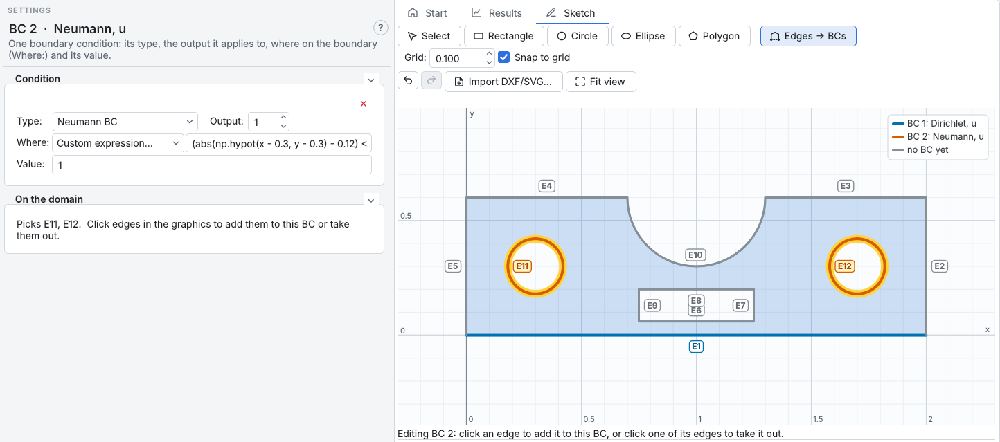
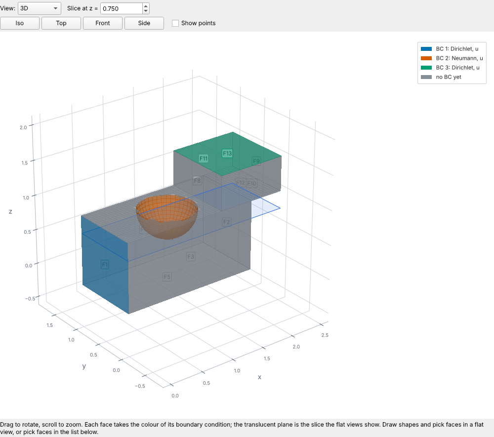
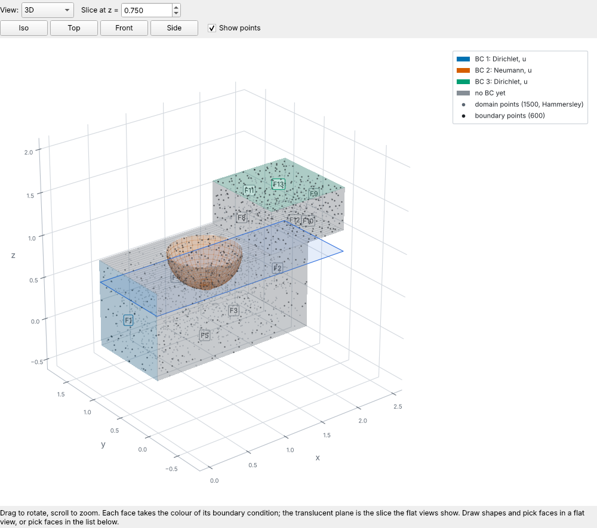
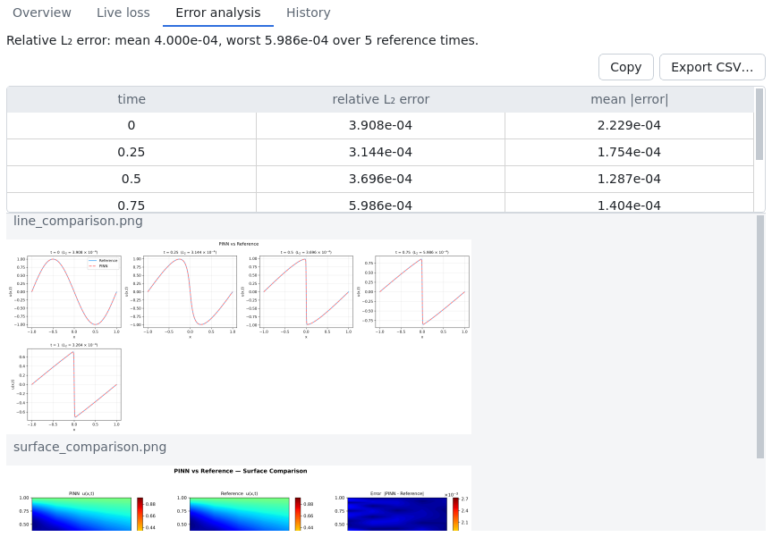
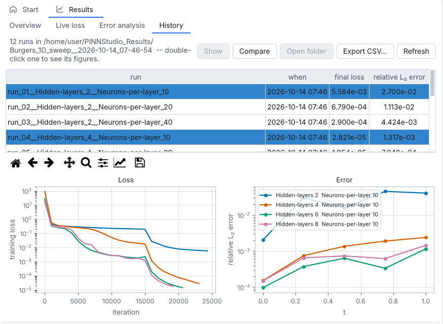
The whole workflow in one video: an example, your own PDE, a sketched domain and its boundary conditions, live training, error analysis, run history and parameter sweeps.
From a first PINN to research problems: the methods are built in, ready to switch on.
Solve a known equation, or learn unknown coefficients — or whole unknown fields — from measured data.
Steady or time-dependent, coupled multi-output systems, integro-differential and fractional equations.
Intervals, rectangles, disks, polygons, cuboids, spheres, and custom shapes combined from them — with Dirichlet, Neumann, Robin, periodic and point-data conditions, or conditions imposed exactly.
Adam, AdamW, L-BFGS and NNCG in any sequence, with learning-rate schedules and loss weights per phase, or weights set from the initial losses.
Vary almost any setting — one at a time, all combinations, paired values, or Bayesian search — with a summary of how the error changes.
Relative L₂, MSE and maximum error against reference data or an exact formula, with line and surface comparisons.
Surface and line plots, animations over time, and any expression of the outputs and their derivatives, such as du_x or sqrt(u**2 + v**2).
Fully connected or parallel networks, multi-scale Fourier features, input and output transforms, and the activation and initializer of your choice.
Each run reports its error against reference data and saves the figures to judge it — here from the Burgers equation, one of the 63 examples.
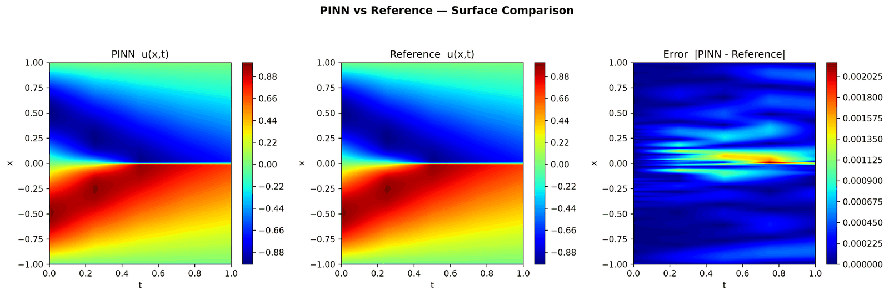
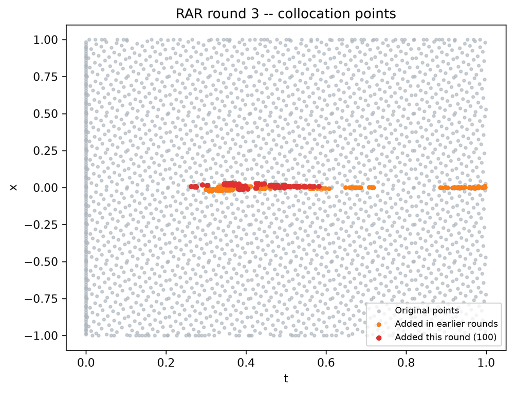
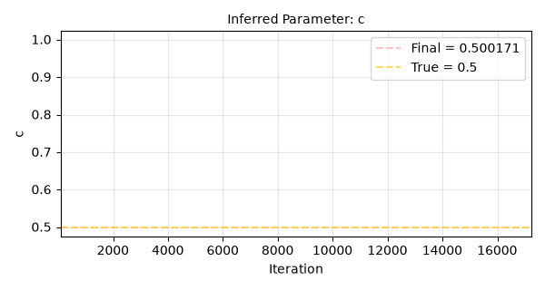
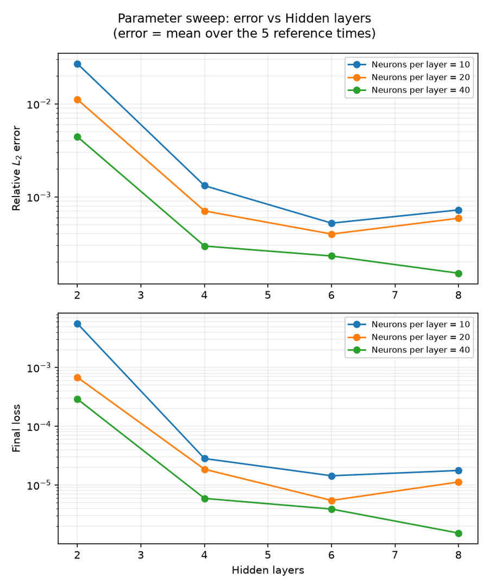
Each example loads every setting in one click — pick it, press Solve, and compare with the reference. 61 come with an exact solution or reference data, and 25 can be run as inverse problems. Each loads with its source's own settings (Default) or with PINNStudio's most accurate settings from the benchmarks (Tuned).
Setups from Raissi et al. (2019), Wight & Zhao (2021), Mattey & Ghosh (2022) and Mathias et al. (2022).
The documented forward and inverse examples of the DeepXDE library, each linked to its original script.
7 ODE, 33 one-dimensional, 18 two-dimensional and 5 three-dimensional problems.
One command installs PINNStudio with its own Python and the PyTorch build that matches your GPU, and adds it to the Start menu, Applications or the app menu. Python and git do not need to be installed. A GPU is optional but helps with larger 2D and 3D problems.
In a terminal:
curl -LsSf https://raw.githubusercontent.com/AsfandyarKhan72/PINNStudio/main/get-pinnstudio.sh | shIn PowerShell:
powershell -ExecutionPolicy ByPass -c "irm https://raw.githubusercontent.com/AsfandyarKhan72/PINNStudio/main/get-pinnstudio.ps1 | iex"Already using Python? pip install pinnstudio works too, and the source install is described in the README.
Then click an example on the Start tab and press Solve — see the Quick Start.
Please cite it as below. PINNStudio is under active development, and we are extending it with newer scientific machine learning and PINN methods.
@software{khan2026pinnstudio,
author = {Khan, Asfandyar and Mamivand, Mahmood},
title = {PINNStudio: A No-Code Scientific Computing Environment for Forward and Inverse Physics-Informed Neural Networks},
year = {2026},
url = {https://github.com/AsfandyarKhan72/PINNStudio}
}